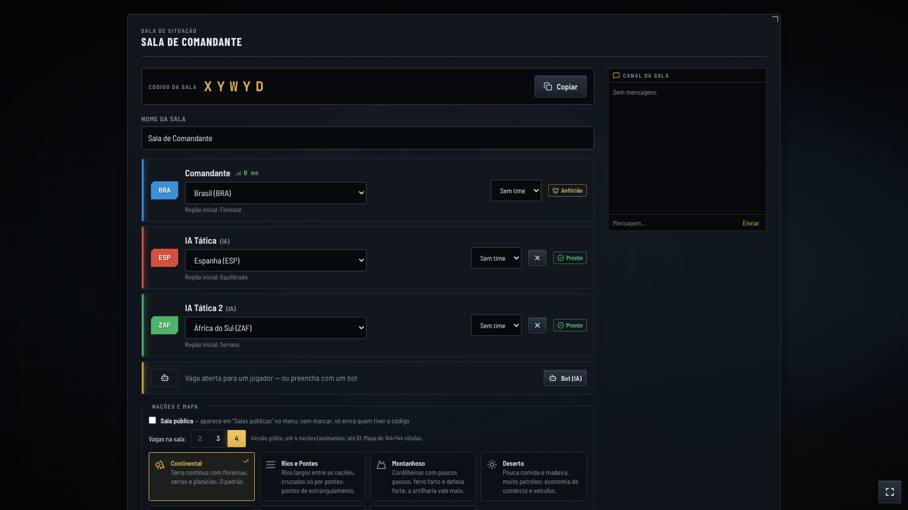
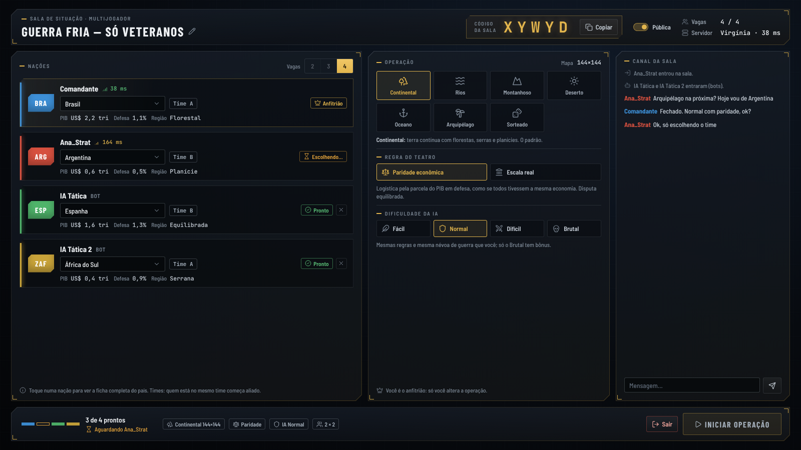

Lobby — antes e depois (mesma tela de 1600 × 900)
Hoje

- A página tem 2.467 px de altura: mapa, regra, dificuldade, fichas dos países e o botão Iniciar ficam lá embaixo, depois de rolar.
- Cada vaga ocupa ~110 px; o canal ocupa uma coluna quase vazia.
- Não dá para ver de relance quem falta ficar pronto nem o que foi escolhido.
Proposta

- Tudo numa tela, sem rolar: nações, operação e canal lado a lado; código da sala em destaque no topo, com "Copiar" e "Pública".
- Barra de ação fixa embaixo: quem está pronto (faixas na cor de cada nação), o que falta ("Aguardando Ana_Strat"), o resumo da operação e o Iniciar.
- Vagas compactas: país, time, ping e estado na mesma linha; a ficha do país vira uma linha (PIB, defesa, região), e a completa abre ao tocar.
- Operação enxuta: mapa em ícones (a descrição só do escolhido), regra e dificuldade em botões lado a lado.